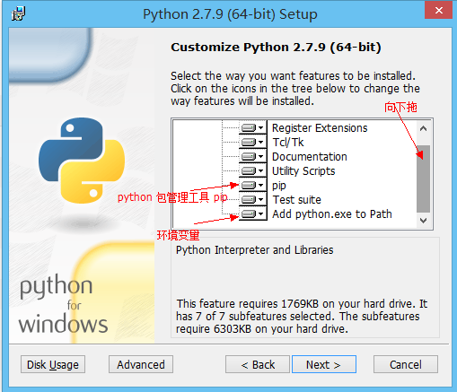

Django搭建博客服务器(1)--环境搭建
一. Django环境搭建
1. 利用pip安装Django
1 | pip install Django |
如果提示 ‘python’不是内部或外部命令，也不是可运行的程序或批处理文件。那说明你的 Python 没有安装好，或者环境变量没有配置正确。
最简单的办法是安装新版本的 Python 2.7.9, 里面集成了 pip，安装时要勾选上环境变量这一个

还可以参见Python环境搭建
最后检查是否安装成功,在终端驶入python，输入版本检测代码
1 | import django |
2. Django新建项目
生成一个项目，将project-name改为你自己的工程名。1
python django-admin.py startproject project-name
生成一个App，逻辑上相当于一个站点。1
python manage.py startapp app-name
在本机开启测试服务，访问localhost:8000查看自己网页生成的状态1
2
3
4python manage.py runserver
# 当提示端口被占用的时候，可以用其它端口：
python manage.py runserver 8001
python manage.py runserver 9999
二. MongoDB环境搭建
1. 下载MongoDB
2. 安装MongoDB
运行下载的msi安装文件，安装完成后，在你需要存放MongoDB数据库的位置新建MongoDB文化夹与mongo.config配置文件，在MongoDB目录下分别新建db(存放数据文件)、log(存放日志文件)文件夹。1
2
3
4--mongo.config
--MongoDB
----db
----log
为了方便初始化MongoDB我们在配置文件添加如下信息(必要配置):1
2
3
4
5bind_ip=127.0.0.1 //绑定访问数据库IP，此处为本机
//port=27017 绑定访问端口，默认27017
dbpath=E:\DjangoTest\MongoDB\db //数据存放路径
logpath=E:\DjangoTest\MongoDB\log\MongoDB.log //日志存放路径
//logappend=true 日志记录方式 以追加方式记录
更多配置选项参考
保存修改后的配置文件，启动MongoDB服务:1
mongod -f mongo.config
启动MongoDB服务后，在cmd中键入mongo，检测是否配置成功。
3. MongoDB知识扩展
MongoDB是一个介于关系数据库和非关系数据库之间的产品，是非关系数据库当中功能最丰富，最像关系数据库的。他支持的数据结构非常松散，是类似json的bson格式，因此可以存储比较复杂的数据类型。Mongo最大的特点是他支持的查询语言非常强大，其语法有点类似于面向对象的查询语言，几乎可以实现类似关系数据库单表查询的绝大部分功能，而且还支持对数据建立索引。
- 什么是非关系数据库(NoSQL)
- MongoDB的分布式集群搭建
- MongoDB的基本命令
Django原生的数据库操作流程十分繁琐，而且在服务部署到生产环境后会产生一系列未知的错误。因此在这里我建议使用MongoEngine作为数据引擎，你可以完全不用学习Django原生数据库操作。
三. MongoEngine安装
1. 安装mongoengine
为了使用mongoengine，你首先需要安装它的依赖库pymongo,之后再安装mongoengine1
2pip install pymongo
pip install mongoengine
2. 连接mongoengine
连接一个运行的MongoDB实例，可以使用connect()函数。第一个参数是需要连接的数据库名称，如果该数据库不存在，那么就会新建一个相应的数据库。如果该数据库需要验证登录，那么用户名和密码这些参数也需要提供。1
2
3
4
5from mongoengine import connect
#无需验证用户名密码
connect('project')
#需要验证时
connect('project', username='webapp', password='pwd123')
在默认情况下，MongoDB的实例是运行在localhost的27017端口上，如果MongoDB是运行于别的地方，那么就需要提供host和port参数：1
2
3connect('project', host='192.168.1.35', port=12345)
#支持Uri连接
connect('project', host='mongodb://localhost/database_name')
3. 操作mongoengine
MongoEngine官方文档
由于mongoengine相关的中文论坛内容很基础，因此在后面的博客中，我会详细列出一些mongoengine的特定解决方案，避免在开发过程中被卡进度。
mongoengine的使用技巧
四. Nginx+Django开发配置
1. nginx+django介绍
Django自带的开发模式在开发过程中确实很便捷，但将项目植入生产环境时，页面文件中引用的本地静态资源会被Django自动过滤，尽管Django支持对本地静态文件做配置处理，但这繁琐的配置过程阻碍了很多新人研究django的兴趣。
因此我的建议是在一开始就利用nignx/apache+Django的开发模式，避免使用Django自带的静态配置流程。
nginx+django的配置流程十分简单，下面我们将其分为开发模式与生产模式进行介绍
2. 开发模式配置
在Django部署路径下执行脚本语言，开启Django本地测试服务: python manage.py runserver
向nginx.conf添加端口配置：1
2
3
4
5
6
7
8
9
10
11
12
13
14
15server {
listen 8080;
server_name localhost;
#将静态文件转发至nginx服务器html/static目录下，避免调用Django静态文件
location ~*\.(js|css|scss|eot|svg|ttf|woff|woff2|otf|jpg)$ {
root html/static/;
break;
}
#反向代理至Django服务ip+port
location ~ / {
proxy_pass http://localhost:8000;
}
}
此时在Django程序或网页代码中引用的本地文件将进入nginx服务器html/static/目录下进行匹配，这样做不仅方便你将项目中多个DjangoApp的静态资源文件集中管理，而且可以完全避免Django繁琐的静态及源文件配置修改流程。
如果你想使用Django原生的静态配置方案，请参考官网Static配置或去Django社区寻找答案
3. 生产模式配置
对于生产环境，出于效率考虑，建议用户使用Django1.9以下的版本，因为Django1.9及以上版本将不再支持fastcgi模式开启。如果你不是windows用户，可以尝试uwsgi连接方案去使用Django1.9及以上的版本。
此处使用Django1.8举例，将nginx.conf文件修改如下:1
2
3
4
5
6
7
8
9
10
11
12
13
14location ~ ^/ {
# 指定 fastcgi 的主机和端口
fastcgi_pass 127.0.0.1:8051;
fastcgi_param PATH_INFO $fastcgi_script_name;
fastcgi_param REQUEST_METHOD $request_method;
fastcgi_param QUERY_STRING $query_string;
fastcgi_param CONTENT_TYPE $content_type;
fastcgi_param CONTENT_LENGTH $content_length;
fastcgi_param SERVER_PROTOCOL $server_protocol;
fastcgi_param SERVER_PORT $server_port;
fastcgi_param SERVER_NAME $server_name;
fastcgi_pass_header Authorization;
fastcgi_intercept_errors off;
}
然后在浏览器里访问http://loaclhost/ 就应该可以看到nginx的欢迎界面了。最后进入你的Django项目的根目录，然后用一下命令来运行服务器：1
python manage.py runfcgi method=threaded host=127.0.0.1 port=8051
刷新localhost页面，你就能看到你的项目主页啦~~